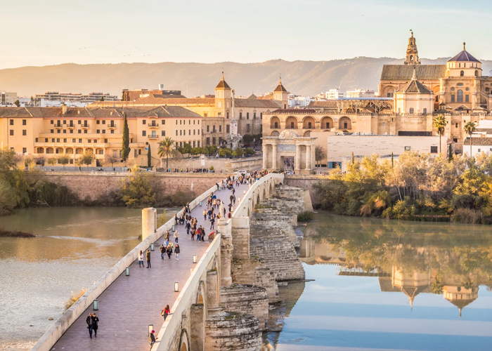
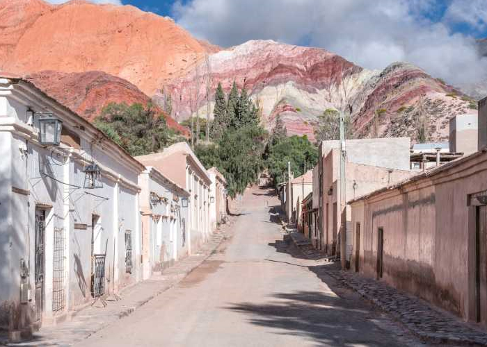

¡VIAJÁ POR ARGENTINA!
Ofrecemos una amplia variedad de opciones para que puedas explorar algunos de los destinos más
impresionantes de Argentina. Ya sea que estés buscando aventuras al aire libre, turismo cultural o
simplemente relajarte en un entorno pintoresco, ¡tenemos todo lo que necesitas para una experiencia de
viaje inolvidable!

Cordoba
Córdoba es conocida como la "capital nacional del turismo" y cuenta con numerosas atracciones
como la ciudad colonial de Alta Gracia, el imponente Cerro Uritorco y la región de Traslasierra
con sus ríos cristalinos y paisajes serranos.
 Santa Fe
Santa Fe
Santa Fe es una provincia en constante crecimiento, que combina su rica historia y arquitectura
colonial con modernos desarrollos turísticos. Aquí puedes disfrutar de la naturaleza, visitar
las ciudades históricas de Santa Fe y Rosario, y degustar la deliciosa gastronomía local.
Mendoza
Mendoza es la meca del vino argentino, con más de 1200 bodegas que ofrecen catas y visitas
guiadas. También puedes disfrutar de la impresionante cordillera de los Andes, el Parque
Provincial Aconcagua y la hermosa ciudad de Mendoza.

Salta
Salta es una de las provincias más fascinantes de Argentina, con una rica historia y cultura
indígena. Aquí puedes visitar lugares impresionantes como el Parque Nacional Los Cardones, las
Salinas Grandes y la Quebrada de Humahuaca, declarada Patrimonio de la Humanidad por la UNESCO.